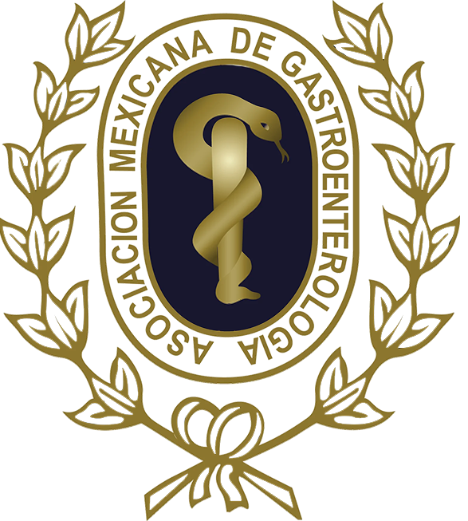
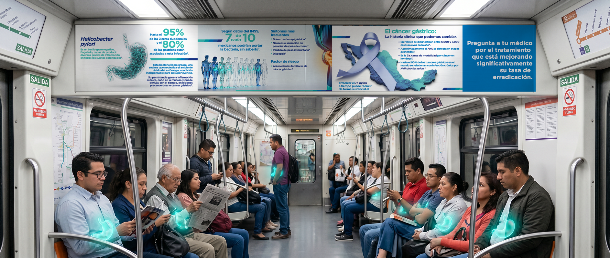
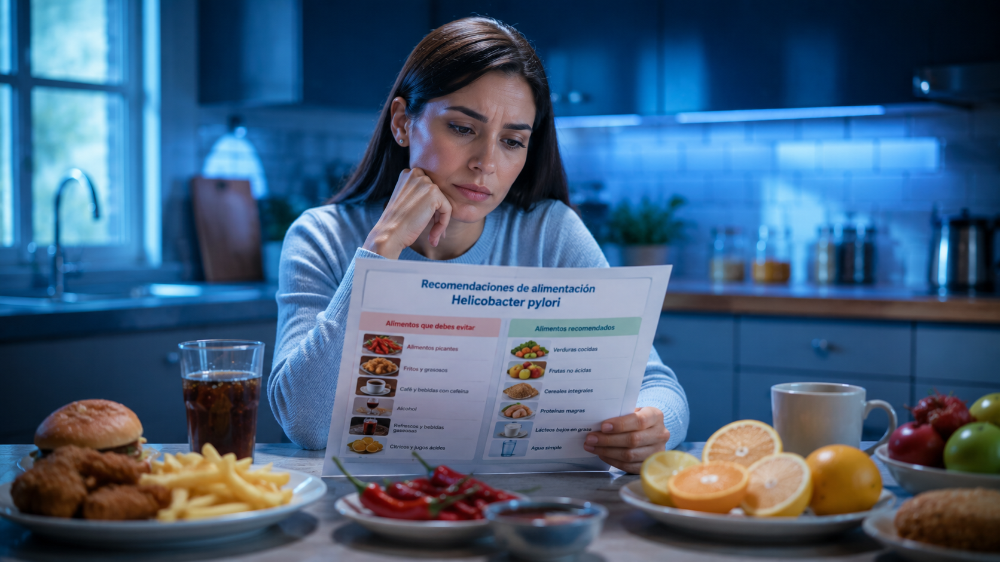
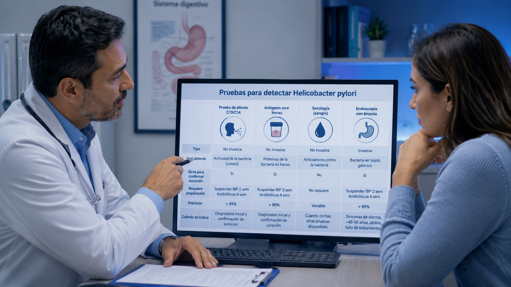
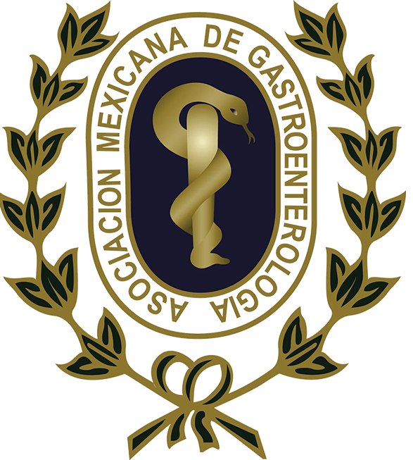

AMG · V Consenso
AMG · V Consenso



La Asociación Mexicana de Gastroenterología es la principal sociedad científica en salud digestiva en México. Sigue sus redes: @amg.org.mx · @gastromx · Facebook
Cada semana, el mensaje exacto que publicamos junto con el formato y la pieza que lo acompaña — carrusel, reel, post o documento. Filtra por mes, plataforma o pilar editorial. Cada tarjeta incluye también el spec técnico (JSON) para producir la imagen.
Pregunta a tu médico por el tratamiento que está mejorando significativamente su tasa de curación.